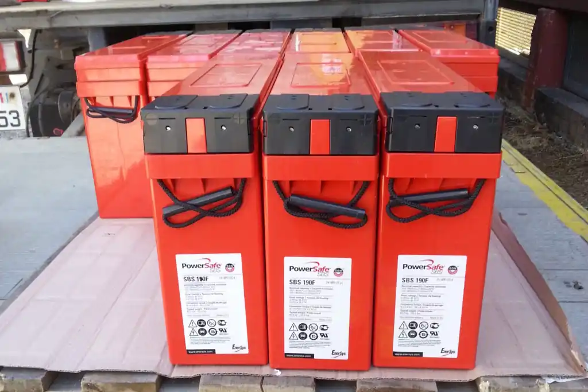

Henting
Vi henter brukte batterier i forbindelse med service eller utskifting.
Vi leverer alt innen stasjonære batterianlegg til industri og kraftforsyning – og foretar kontroller, reparasjoner og nymontasje av alle typer batterianlegg.

Kontroll og ettersyn av batterier er viktig med tanke på driftssikkerheten. Vi kjører ofte årlige kontroller, og dokumenterer tilstanden på anlegget.
Batterier skal ikke kastes som vanlig avfall. Vi henter og håndterer dem riktig.
Vi henter brukte batterier i forbindelse med service eller utskifting.
Batteriene leveres til godkjent mottak, og dokumenteres.
Du får dokumentasjon på at batteriene er tatt hånd om.
Vi skaffer UPS, batterianlegg og aggregater, og tar service og kontroll på det du har.